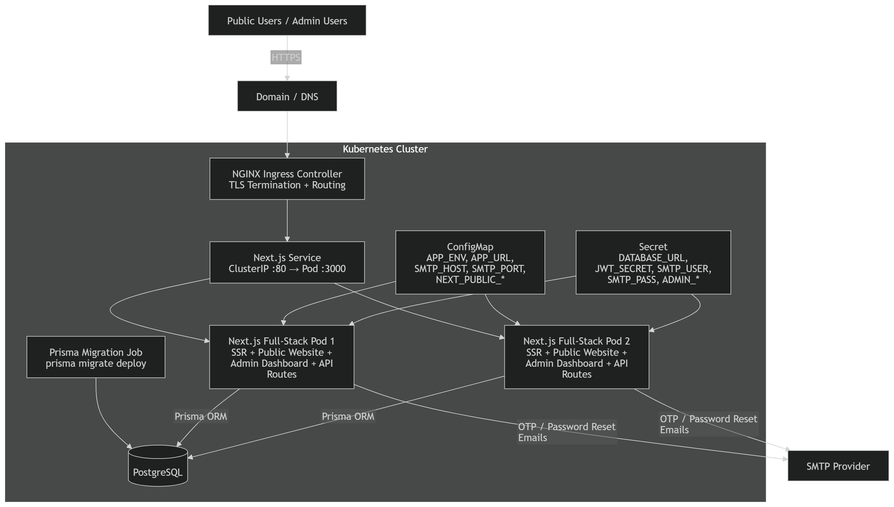
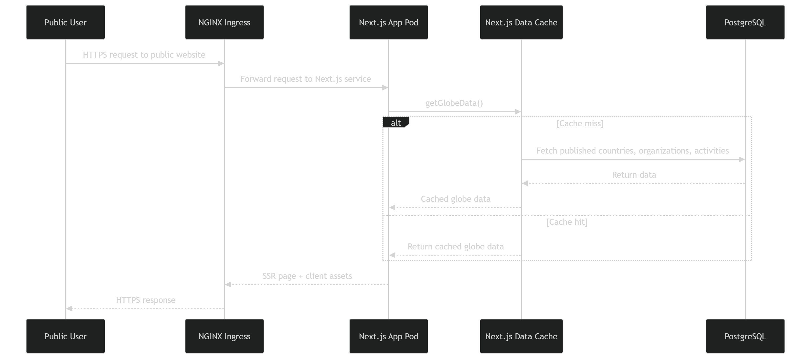
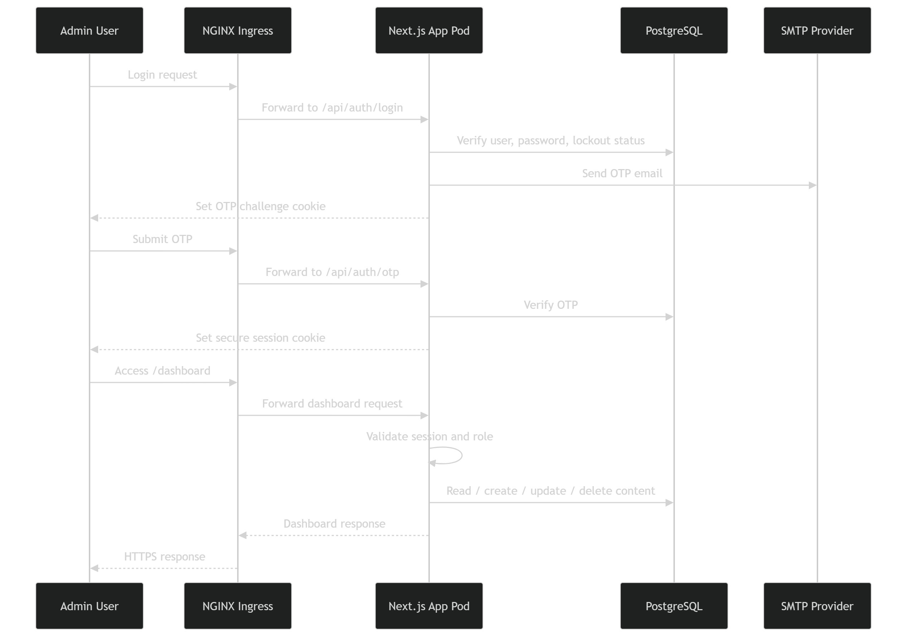
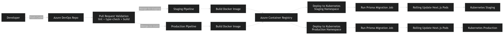

| المكوّن | الوصف | الجمهور |
|---|---|---|
| الموقع العام | صفحة واحدة بكرة أرضية تفاعلية تعرض أنشطة المجمع حول العالم | الزوار العامون |
| لوحة التحكم | واجهة إدارية لإضافة الأنشطة وتعديلها وحذفها ونشرها | فريق المجمع فقط |
يُنشر المشروع على بيئتين منفصلتين تماماً لضمان جودة الإصدارات وعدم تأثُّر المستخدمين بأي تغييرات قبل اعتمادها:
| البيئة | النطاق | الغرض | الجمهور |
|---|---|---|---|
| بيئة التجربة (Staging) | staging.example.sa | اختبار التحديثات والمراجعة الداخلية قبل النشر الرسمي — نسخة مطابقة للإنتاج ببيانات اختبارية | فريق المجمع التقني والمحتوى |
| بيئة الإنتاج (Production) | example.sa | الموقع الفعلي المُتاح للعموم — يستقبل الزيارات الحقيقية | الزوار + فريق المجمع |
صُمِّمت بنية الإنتاج لتكون عالية الإتاحة (HA) مبنيةً على Kubernetes (Oracle OKE)، بحيث لا يتسبب تعطُّل أي مكوِّن منفرد في توقُّف الموقع:
/api/health/live — Liveness Probe: يتحقق من أن العملية حية؛ يُعيد K8s تشغيل الـ pod إذا فشل./api/health/ready — Readiness Probe: يتحقق من اتصال قاعدة البيانات؛ يُوقف K8s توجيه الطلبات إلى الـ pod حتى ينجح.هدف مستوى الخدمة (SLA): إتاحة 99.9% شهرياً، مع زمن استرجاع (RTO) أقل من 15 دقيقة وزمن فقد بيانات (RPO) أقل من 5 دقائق.
تعتمد البنية على خدمات Azure المُدارة بدلاً من خوادم VPS مستقلة، مما يُقلِّل عبء الإدارة ويضمن الإتاحة العالية:
| الخدمة | الغرض | المواصفات المقترحة |
|---|---|---|
| Oracle Container Engine for Kubernetes (OKE) | تشغيل وإدارة حاويات التطبيق | Cluster واحد — node pool للإنتاج: نوع Standard_D2s_v3 (2 vCPU / 8 GB) × 2 عقدة على الأقل؛ node pool للـ staging: عقدة واحدة من نفس النوع |
| Oracle Cloud Infrastructure Registry (OCIR) | تخزين صور Docker المبنية | Basic tier (يمكن ترقيته لـ Standard عند زيادة الحجم) |
| OCI Database with PostgreSQL | قاعدة البيانات المُدارة خارج الـ cluster | Burstable B2s للـ staging؛ General Purpose D2ds_v4 للإنتاج — مع تفعيل High Availability و Auto-backup |
| Azure DevOps | CI/CD Pipelines لبناء الصور ونشرها تلقائياً | مستودع Git + Pipelines + Variable Groups للأسرار |
| البيئة | Namespace | الغرض |
|---|---|---|
| بيئة التجربة | ksgaal-staging | تشغيل نسخة التجربة بإعدادات وأسرار مستقلة |
| بيئة الإنتاج | ksgaal-production | تشغيل نسخة الإنتاج بإعدادات وأسرار مستقلة |
يُبنى التطبيق كصورة Docker متعددة المراحل (Multi-Stage Build) لتقليل الحجم النهائي وضمان عدم تسريب أدوات التطوير في بيئة الإنتاج:
| المرحلة | الغرض |
|---|---|
base | صورة node:20-alpine الأساسية مع libc6-compat |
deps | تثبيت حزم npm (npm ci) ونسخ ملفات Prisma لتوليد الـ client |
builder | استقبال NEXT_PUBLIC_* كـ build-args وتشغيل prisma generate ثم npm run build — ينتج standalone output في .next/standalone/ |
runner | صورة نهائية خفيفة تحتوي فقط على .next/standalone والأصول الثابتة — تعمل بمستخدم غير root (nextjs:1001) |
next.config.ts بـ output: "standalone" — يُنتج server.js منفرداً لا يحتاج node_modules الكاملة عند التشغيل.NEXT_PUBLIC_FRONTEND_URL) تُحقن وقت البناء عبر --build-arg، لذا تُبنى صورة منفصلة لكل بيئة (staging ≠ production).في بنية Kubernetes، نقطة الدخول الوحيدة للإنترنت هي NGINX Ingress Controller الذي يحمل عنوان IP عاماً واحداً. جميع المنافذ الداخلية تبقى داخل الـ cluster:
| المنفذ | البروتوكول | الاتجاه | الغرض |
|---|---|---|---|
| 80 | HTTP | وارد — NGINX Ingress فقط | إعادة التوجيه التلقائي إلى HTTPS |
| 443 | HTTPS | وارد — NGINX Ingress فقط | حركة المرور العامة؛ TLS يُنهى عند الـ Ingress |
| 3000 | HTTP | داخلي — داخل الـ cluster فقط | منفذ التطبيق (Next.js) — لا يُكشف خارجياً |
| 5432 | TCP | صادر من الـ cluster إلى OCI Database with PostgreSQL | اتصال التطبيق بقاعدة البيانات الخارجية المُدارة |
| كل المنافذ | — | صادر | سحب صور Docker من OCIR، تحديثات الحزم، اتصالات SSL |
لإتمام عملية الإعداد والنشر، يحتاج الفريق التقني إلى ما يلي من المجمع:
| المهمة | المسؤول | التفاصيل |
|---|---|---|
| توفير اسمَي النطاق | المجمع | نطاق الإنتاج (مثل example.sa) ونطاق التجربة (مثل staging.example.sa) |
| ضبط سجلات DNS | المجمع | توجيه A Record لكل نطاق إلى عنوان IP الـ NGINX Ingress Controller — يزوِّد الفريق التقني المجمعَ بعنوان IP الـ Ingress بعد اكتمال إعداد الـ cluster، ويُجري المجمع التعديل من لوحة DNS الخاصة بهم |
| توفير شهادات SSL | المجمع | ملف الشهادة (.crt)، المفتاح الخاص (.key)، وسلسلة CA لكلا النطاقَين |
| تثبيت شهادات SSL | الفريق التقني | تحميل الشهادات كـ Kubernetes TLS Secret وربطها بإعداد الـ Ingress لكل بيئة |
النشر مؤتمَت بالكامل عبر Azure DevOps Pipelines — لا يتطلب أي تدخل يدوي على الخوادم:
main للإنتاج وdevelop للتجربة.main وينشر على الإنتاج تلقائياً.| # | الخطوة | التفاصيل |
|---|---|---|
| 1 | بناء صورة Docker | يُشغَّل docker build مع تمرير NEXT_PUBLIC_* كـ build-args مأخوذة من Variable Group البيئة — تُنتج صورة مستقلة لكل بيئة |
| 2 | رفع الصورة إلى OCIR | docker push إلى Oracle Cloud Infrastructure Registry بوسم يتضمن رقم البناء |
| 3 | إنشاء Kubernetes Secret | يُنشأ أو يُحدَّث secret يحتوي DATABASE_URL، JWT_SECRET، SMTP، بيانات الأدمن — القيم تأتي من ADO Secret Variables ولا تُسجَّل في أي ملف |
| 4 | تطبيق الـ overlay | kubectl apply -k overlays/staging/ أو overlays/production/ — يُنشئ namespace ويُطبِّق ConfigMap وService وIngress |
| 5 | تشغيل ترحيل قاعدة البيانات | يُحذف Job القديم ثم يُطبَّق migration-job.yaml الذي يُشغِّل prisma migrate deploy — Pipeline يتوقف هنا في حال الفشل ولا ينتقل للنشر |
| 6 | انتظار اكتمال الترحيل | kubectl wait --for=condition=complete --timeout=300s job/ksgaal-activity-map-migrate |
| 7 | نشر التطبيق | kubectl apply -f base/deployment.yaml — يُطبِّق RollingUpdate فلا يُزال pod قديم إلا بعد جاهزية الجديد |
| 8 | انتظار اكتمال الـ rollout | kubectl rollout status deployment/ksgaal-activity-map --timeout=300s — يفشل الـ pipeline إذا لم تكتمل خلال 5 دقائق |
| 9 | اختبار دخاني (Smoke test) | التحقق من /api/health/live و/api/health/ready — كلاهما يجب أن يُعيد HTTP 200 |
يوضِّح هذا القسم التقنيات المعتمدة في بناء المنصة، شاملاً محرك قاعدة البيانات والـ Application Stack الكاملة.
| البند | التفاصيل |
|---|---|
| نوع قاعدة البيانات | Relational (علائقية) |
| المحرك (Engine) | PostgreSQL |
| طريقة الوصول (ORM) | Prisma ORM |
| بروتوكول الاتصال | DATABASE_URL (postgresql://) |
| الكيانات الرئيسية | Users · Organizations · Countries · Activities · Activity Types · Audit Logs |
| الطبقة | التقنية | الإصدار |
|---|---|---|
| Runtime | Node.js LTS | 20 (مُثبَّت في Dockerfile وpackage.json engines) |
| Frontend Framework | Next.js (App Router، Standalone Output) | 16.2.6 |
| UI Library | React | 19.2.0 |
| Language | TypeScript | 5.x |
| Styling | Tailwind CSS | 4.x |
| ORM | Prisma | 6.19.3 |
| قاعدة البيانات | PostgreSQL (OCI Database with PostgreSQL) | 16+ |
| Validation | Zod | 4.1.12 |
| Animation | Framer Motion | 12.x |
| 3D Rendering | Three.js | 0.184.0 |
| Interactive Maps | MapLibre GL | 5.24.0 |
| Authentication | JWT (jose) + bcryptjs | jose 6.2.3 |
| Forms | React Hook Form | 7.66.1 |
| الطبقة | التقنية | الدور |
|---|---|---|
| Container Runtime | Docker (Multi-Stage Build) | بناء صورة خفيفة بـ 4 مراحل — الصورة النهائية تعمل بـ node server.js فقط |
| Container Orchestration | Kubernetes (Oracle OKE) | إدارة الـ pods، Rolling Updates، Health Probes، namespace isolation |
| Ingress Controller | NGINX Ingress Controller | نقطة الدخول الوحيدة — TLS termination + routing |
| Manifest Management | Kustomize (Overlays) | base مشترك + overlays مستقلة للـ staging والإنتاج |
| Container Registry | Oracle Cloud Infrastructure Registry (OCIR) | تخزين صور Docker المبنية |
| CI/CD | Azure DevOps Pipelines | بناء ورفع ونشر تلقائي عند كل push |
| Secrets Management | ADO Variable Groups + K8s Secrets | الأسرار محفوظة في ADO ومُمرَّرة عند النشر إلى K8s Secret — لا تُخزَّن في الكود |
| Database Migration | Kubernetes Job (prisma migrate deploy) | يُشغَّل قبل كل نشر — الـ pipeline يتوقف إذا فشل |
engines من package.json.يوضِّح المخطط مكونات الـ cluster الكاملة: المستخدمون ← DNS ← NGINX Ingress ← Service ← Pods ← PostgreSQL + SMTP. يُبيِّن أيضاً ConfigMap وSecret وPrisma Migration Job.

مخطط تسلسلي يُتابع طلب HTTPS من الزائر العام حتى استجابة الصفحة، مع منطق Cache Hit / Cache Miss لبيانات الكرة الأرضية.

مخطط تسلسلي يُوضِّح خطوات تسجيل الدخول: التحقق من كلمة المرور ← إرسال OTP عبر SMTP ← التحقق من OTP ← إنشاء جلسة آمنة ← الوصول إلى لوحة التحكم.

يُبيِّن المخطط الرحلة الكاملة من لحظة دفع الكود حتى وصوله إلى الـ cluster: التحقق من الكود ← بناء صورة Docker ← رفعها إلى OCIR ← نشرها على K8s ← تشغيل Migration Job ← Rolling Update.
